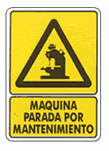

Una màquina d'una fàbrica s'ha de parar alguns dies durant unes hores per a realitzar-li el manteniment. Es manté un registre de les hores que dura la jornada i les hores que ha estat en funcionament la màquina. Es vol saber quants dies se li ha realitzat el manteniment, i quantes hores ha estat parada.
Input Format
El primer número indica el nombre de dies que hi ha al registre. A continuació venen les dades del registre.
Cada registre consta de dos números: * indica les hores que dura la jornada aquell dia * indica les hores que ha estat en funcionament la màquina aquell dia
Constraints
-
Output Format
Dos números enters separats per espais en blanc
Sample Input 0
3
8 7 8 8 8 5
Sample Output 0
2
4
Explanation 0
Se li ha realitzat manteniment 2 dies, durant 4 hores en total
Sample Input 1
4
8 4 6 5 10 5 8 8
Sample Output 1
3
10
Sample Input 2
5
8 8 6 6 5 5 7 7 10 10
Sample Output 2
0
0
Sample Input 3
1
10 0
Sample Output 3
1
10